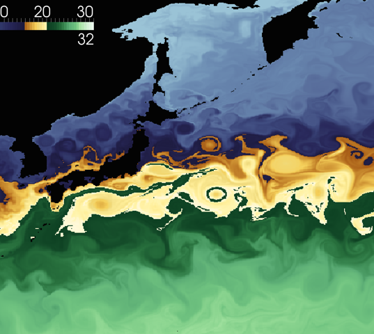

Welcome to the Data Science at Scale Blog
Extremely large datasets and extremely high-rate data streams are becoming increasingly common due to the operation of Moore's Law as applied to sensors, embedded computing, and traditional high-performance computing. Interactive analysis of these datasets is widely recognized as a new frontier at the interface of information science, mathematics, computer science, and computer engineering. Text searching on the web is an obvious example of a large dataset analysis problem; however, scientific and national security applications require far more sophisticated interactions with data than text searches. These applications represent the 'data to knowledge' challenge posed by extreme-scale datasets in, for example, astrophysics, biology, climate modeling, cyber security, earth sciences, energy security, materials science, nuclear and particle physics, smart networks, and situational awareness. In order to contribute effectively to Los Alamos National Lab's overall national security mission, we need a strong capability in Data Science at Scale. This capability rests on robust and integrated efforts in data management and infrastructure, visualization and analysis, high-performance computational statistics, machine learning, uncertainty quantification, and information exploitation. The Data Science at Scale capability provides tools capable of making quantifiably accurate predictions for complex problems with the efficient use and collection of data and computing resources.
Hosted on GitHub Pages — Theme by orderedlist
I've updated the tutorial that I gave at OSU on beginner Python and using numpy and matplotlib.
You can find the updated version on github.
Thanks to Han-Wei Shen, his students, and Tom Peterka for attending, and helping me to prepare for the Visualization tutorial coming up in a few weeks.
Link to this postAfter starting to implement some of these
queries, I started
running into the problem that
MPAS doesn't have a regular
grid. In particular, it has a Voronoi tesselated grid, which means
when you do integrations (or averages), this becomes a problem:
select avg(u), avg(v), y, z group by x.
How do you group by x, when every x is unique? In particular, the xs are floating point data and don't line up exactly. Group bys are going to difficult, and we have seen this before in our experiments with bitmap indices on floating point data.
A first solution looks like we need to quantize the values we want to group by. This is what we do in the bitmap indicies, as floating point values get quantized. A better solution likely involes doing an actual integration with a kernel of some stencil size with discrete x values, and searching for the cells that sit under the kernel.
Though, that second method doesn't necessarily work well in a SQL language. For now, lets just go with the first solution, because it fits a SQL query better.
Link to this postI love Python. I've basically done all of my research in Python since 2001 or so, and recently I'm becoming a Python evangelist (though, Python does have its drawbacks, like I wish it had pattern matching, immutable data so you could compile it, type inference for the same reason, better syntax for partial functions, etc... But I digress.)
Keeping with my recent evangelism, I'll be at Ohio State, IEEE Vis 2014, and SIAM CSE 2015 this year teaching Python for Visualization and Analysis tutorials with colleagues of mine at Continuum Analytics, Kitware, and Indiana University.
Hope to see you there!
Link to this postRecently, while working with some databases, I was trying to come up with some examples of what a scientific workload might look like in a database.
This is because our typical workflow uses things other than databases, like flat binary files (hopefully column-major, though sometimes our scientists do row-major), HDF5, NetCDF, VTK XML, etc. In rare circumstances, they sometimes come in a text file.
Imagine the data management nightmare going from: supercomputer, to parallel file system, to tape drives, and back again to do any analysis. It's slow, cumbersome and a pain to manage a large-scale scientific data set in this way, because I/O is always the bottleneck nowadays and it wastes scientist time to move the data around from all the different storage systems. So a lot of my interest is trying to bring SQL (and the different implementations of it) as a DSL (domain specific language) to subset, slice-and-dice, and query HPC data.
These are just some example queries I might imagine on an MPAS-O ocean dataset, if they were stored in a SQL-like storage system, off the top of my head:
select avg(temp), avg(salt) group by monthselect avg(u), avg(v), y, z group by xselect avg(u) * avg(u) + avg(v) * avg(v), y, z group by xselect avg(temp), avg(salt) where month = 4select avg(temp), avg(salt) where month = 4 and z = 0select x, y, avg(u), avg(v), avg(salt), avg(temp) where month = 4 and z = 0 and x > 1300 and x < 1500 and y > 1300 and y < 1500 group by x, yselect x, y, salt where temp > 20 and z = 0select x, y, salt where temp < 0 and z = 0select x, y, salt where temp < 0 and z > 0select avg(salt), avg(temp) group by weekselect x, y, salt, temp where sqrt(u*u + v*v) > 50 and z = 0This is a visualization of ocean temperature, in degrees Celsius, from the MPAS-Ocean Model, developed at Los Alamos National Laboratory. The goal of the visualization is to enable detailed views of the eddies and currents in specific regions of the model. The color map developed allows for a detailed rendering of specific data ranges. The image of the North Atlantic shows that the Gulf Stream departs the US coast at Cape Hatteras, NC, and turns left just south of Greenland, a feature known as the 'Northwest Corner'. This pathway compares well with observations, and is highlighted by a narrow range of greens on the colormap. In the western Pacific, the Kuroshio current is a narrow stream of warm water that sheds eddies as it departs eastward from Japan. The colormap was chosen to use light yellow at 22C at the center of the jet, highlighting cooler eddies to the north in blue and warmer eddies to the south in green. It was produced by Francesca G. Samsel of the Center for Agile Technologies at the University of Texas at Austin and Mark Petersen of the Climate, Ocean, Sea Ice Modeling Team at the Los Alamos National Laboratory.

Link to this post{kind=link}